Captured Image Fine Art Photography
Fine art landscape and architectural photography, both film and digital formats -color, black & white and infrared...
Fine art landscape and architectural photography, both film and digital formats -color, black & white and infrared...
The Very Large Array -radio telescopes in Socorro, New Mexico (Infrared Black & White print, tinted)
Beauty from foreign lands...
Beauty from foreign lands...
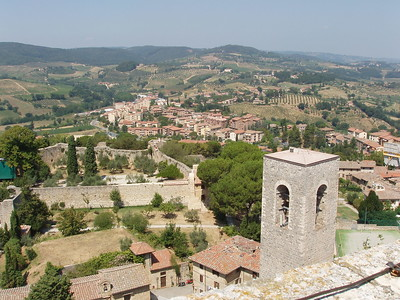
Village and bell tower in Tuscany, Italy (Color print)
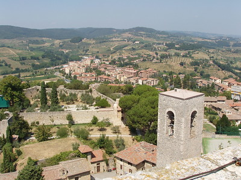
Village and bell tower in Tuscany, Italy (Color print)
Glimpses of nature...
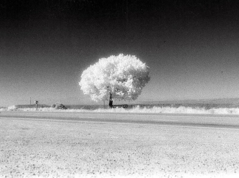
Ghostly tree along the Rio Grande River (Infrared Black & White print)
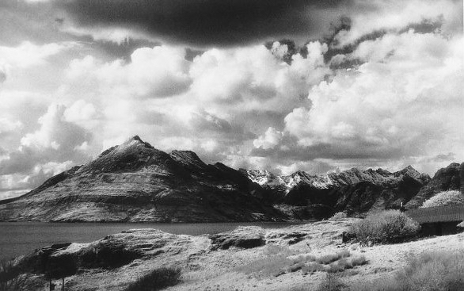
Mountain range on the Isle of Skye, Scotland (Infrared Black & White print)
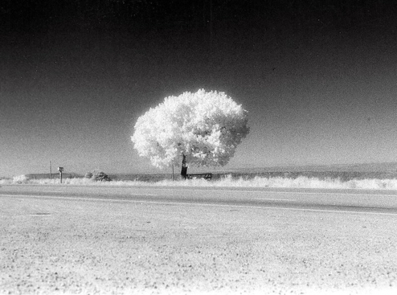
Ghostly tree along the Rio Grande River (Infrared Black & White print)
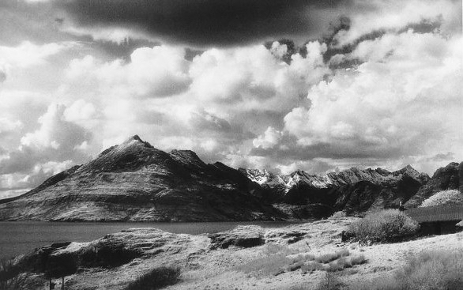
Mountain range on the Isle of Skye, Scotland (Infrared Black & White print)
Stunning ruins, magnificent edifices...

Old brick brewery, Saint Louis, MO (Infrared Black & White print -tinted)
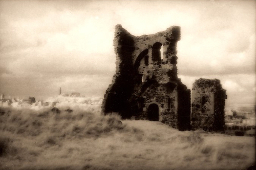
Ruins atop an ancient, dormant volcano. Edinburgh, Scotland (Infrared Black & White print -tinted)

Green Lane Railway Station, Birkenhead, England (Infrared Black & White print -tinted)
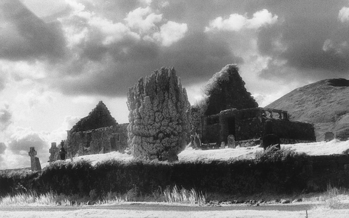
Ancient Celtic church ruins. Isle of Skye, Scotland (Infrared Black & White print -tinted)
Old brick brewery, Saint Louis, MO (Infrared Black & White print -tinted)
Old brick brewery, Saint Louis, MO (Infrared Black & White print -tinted)
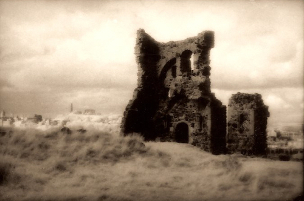
Ruins atop an ancient, dormant volcano. Edinburgh, Scotland (Infrared Black & White print -tinted)
Green Lane Railway Station, Birkenhead, England (Infrared Black & White print -tinted)
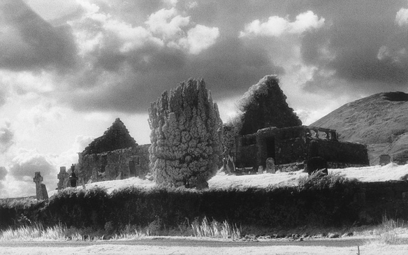
Ancient Celtic church ruins. Isle of Skye, Scotland (Infrared Black & White print -tinted)
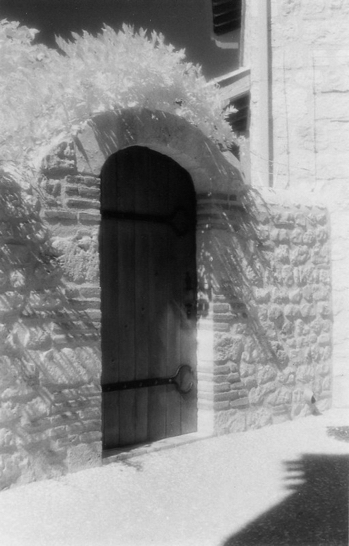
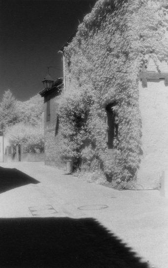
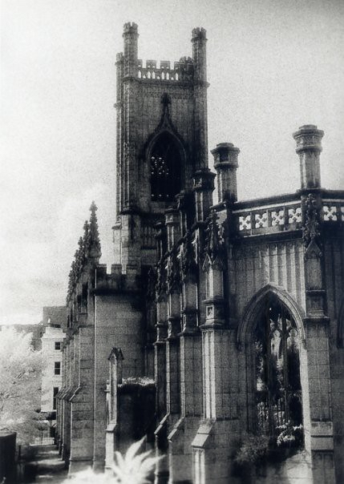
Prints
5" x 7" matted 8" x 12" - $45Metal Framed to 8" x 12 - $75
Wood Framed to 10" x 14" - $90
11" x 14" matted 16" x 20" - $125
Wood Framed to 21" x 25" - $275
Contact:
email: cifa@imageq.comphone: (831) 582-2308
strong>
© 2022 Captured Image Fine Art -all images/works protected.